ETAMem：为长期对话分别组织事件、情感与时间记忆
ETAMem 的英文原题为 ETAMem: Decoupling and Aligning Heterogeneous Memory for Long-Term Conversational Agents。作者为 Xinying Qian、Ying Zhang、Yu Zhao、Xubo Liu、Baohang Zhou 和 Jeff Z. Pan，一作主机构为南开大学，合作机构包括天津工业大学和爱丁堡大学。论文于 2026 年 10 月 27 日首次公开，本笔记按 2026 年 10 月 29 日核验的原文记录，属于 LLM 长期记忆与个性化检索方向。唯一论文入口为 arXiv 摘要页。本轮未核验到本文独立代码或项目入口；论文保留的 ACM 会议、日期及 DOI 模板不能作为已经正式录用的证据。
一段对话中的事实、偏好和时间信息常被混在粗粒度记忆中；主要按语义相似度组织记忆，又可能遗漏情感与时间上的关联。长期对话记忆需要先区分这些异质信息，再让各类信息采用适合自身特点的表示和组织方式。
1. 背景和问题
长期对话系统的困难在于，用户当下的提问经常依赖过去多个会话中零散出现的信息。问“这周做过什么”，需要先限定时间范围，再汇总活动；问“我喜欢哪些活动”，需要从多个事件里判断用户的态度；问“现在最喜欢哪一种酱料”，还必须区分过去提到过的选项和最近表达的真实偏好。它们可能使用相同的一批历史对话，却要求不同的检索组织方式。把历史放进一个向量库并不自动赋予系统这些差别：检索到主题相近的文本，只能说明主题匹配，不能保证证据具备回答问题所需要的关系。
原文把已有系统分成扁平与结构化两类。扁平记忆把抽取事实或会话摘要作为独立条目，用通用文本嵌入搜索；结构化记忆则建立时间树、语义树或关系图，让一个节点汇总相关条目。前者容易被检索粒度限制，后者提供了层级和链接，但共同问题是：一条记忆的内容类型，未必与它进入索引时采用的相似度一致。例如，“爬山非常累，但风景很美，我想再去”包含活动、身体感受、评价以及再次参与的意愿。将整句嵌入后，登山这个主题可能很突出，偏好信号却被稀释。把它归入户外活动分支之后，跨主题的喜好还会分散在互不相邻的位置。
论文称第一类问题为信息纠缠。许多系统以一个对话轮次或一个摘要为最小记忆单位，即便做过事实抽取，也不一定明确区分客观事件与带态度的信息。检索时若整条记录被返回，回答模型要重新判断哪些部分是证据、哪些只是上下文；若摘要阶段已经丢掉态度或时间限定词，后续再精细的排序也难以恢复。ETAMem 因此选择语义完整的原子记忆单元，要求一个单元表达一个相对独立的信息项，并尽量在抽取阶段保留人物指代、背景和时间。这是一种有损处理过程中的保真目标，并非数学保证，后文的原对话回退正是对抽取损失的补偿。
第二类问题是组织方式错配。仅按语义主题构建的树可能很适合“过去谈过什么”，却不一定适合“对什么持积极态度”。一个人对登山、寿司和某本书都表达过喜欢，如果组织依据一直是主题，偏好证据就分别落在运动、饮食和阅读分支。反过来，若全部按情感聚类，几条同为积极情绪的记忆可能没有共同事件，问具体发生过什么时也会受到干扰。因此，论文主张不同信息类型拥有专用表示与专用层级，同时保留覆盖全部记忆的时间组织。问题由“怎样建一棵更好的树”改成了“哪些记忆应当在哪一种结构里被组织”。
这里的三视图并不意味着对所有记录都建立三份相同索引。Event 视图组织中性事实，Affect 视图组织正面或负面的情感内容，Time 视图按会话、日、周和月索引全部原子记忆。前两者在内容覆盖上有选择性，后者提供完整的时间入口。这个差别影响实验解释：时间视图单独使用时强于事件或情感视图，不仅可能因为时间有价值，也因为它存有更完整的信息。不能看到时间视图分数较高，就断言语义组织没有作用；应比较同等信息覆盖和预算下的组合结果，以及专用表示、组织结构和路由策略分别带来的收益。
ETAMem 与直接扩展上下文窗口的思路也有不同。它不要求模型每次读完全部会话，而是在会话到来时建立外部记忆，收到查询后选择证据再生成回答。代价从单次超长上下文转移到了持续的信息抽取、节点维护和检索。系统因而必须同时回答三个问题：新增记忆如何进入已有结构，结构变大后如何避免过度碎片化，以及每个查询如何在三条路径之间分配有限预算。本文的动态挂接、拆分、合并和熵路由，分别解决这条处理链上的不同环节。它不是一种新的基础语言模型，也没有通过长期交互训练一个统一可微记忆网络。
对推荐研究而言，本文最直接的联系是显式用户偏好与交互事实的区别。发生过一次购买，不等于用户长期喜欢某个属性；一句“我再也不想买这种鞋”在主题上仍然与鞋高度相似，但方向与正反馈完全不同。ETAMem 提供了一种把事实、态度和时间分别保存的实现示例，不过论文评测的是问答与个人记忆，不是点击率、转化率或推荐排序。将其迁移到用户建模时，必须另外评估陈旧偏好、矛盾态度、否定表达和删除请求，不能把问答准确率的提高直接解释为推荐收益。
另一个容易忽略的背景是记忆系统不断变化。一次离线聚类完成时相关的两个事件，经过多次对话后可能属于不同阶段；每增加一条信息都重写所有祖先摘要，又会产生昂贵的模型调用。论文把结构调整放到会话结束时，并延迟更新摘要，正是在及时性和维护成本之间做选择。这个问题与检索时选多少条证据有关但并不相同：即使查询预算固定，构建时过度合并也会把本应区分的偏好压成同一摘要，过度拆分则增加叶数并削弱每个节点的上下文。研究目标因而包含持续管理记忆结构，不能仅用静态向量搜索的准确率衡量。
本文的证据边界同样需要先说明。主评测采用 LLM 裁判准确率，而非对所有回答逐一人工复核；大部分基线结果沿用 TiMem 的评测表，只有部分方法由作者在对应设置下重测。主实验的推理预算以检索叶节点数定义，成本以模型调用 token 衡量，并不等同于磁盘大小、索引构建时间或线上尾延迟。三次重复和样本标准差能反映作者设置内的波动，却不能覆盖评测器偏差、不同语言或真实用户长期分布漂移。阅读时应把“异质组织是否有帮助”与“整个系统已经满足生产需求”分开判断。
2. 方法
2.1 异质信息解析与视图专用表示
原文先把第一个会话轮次视为带时间戳的输入，由 LLM 抽取一组原子记忆，再交给现成的情感分类器判断正、中、负三类极性。这里容易误读的一点是，主方案的情感分类器不是 LLM：论文使用 Twitter-RoBERTa-Sentiment，情感表示使用 RoBERTa-GoEmotions，文本表示使用 Qwen3-Embedding-0.6B。LLM 用于原子事实抽取、内部节点摘要和回答生成。区分这些调用可以解释为什么作者认为情感识别没有额外引入一次 LLM 推理，也避免把附录的 GPT-4o-mini 对照实验误当成主方法。
符号解释：$x_t$ 是第 $t$ 轮对话及时间戳，$\mathcal A_t$ 是该轮产生的记忆集合，$a_{t,i}$ 是其中第 $i$ 条内容，$n_t$ 是条数；$\mathcal P$ 为负面、中性、正面标签集合，$f_{\mathrm{sent}}$ 为分类器，$p_{t,i}$ 为最高分标签；$\phi_{\mathrm{text}}$ 与 $\phi_{\mathrm{affect}}$ 分别为文本和情感编码器，$\mathbf r_{t,i}$ 是对应表示。这组式子合并原文公式一至三，说明信息的拆分与分路先于树的构建，分类错误会沿后续组织链传播。
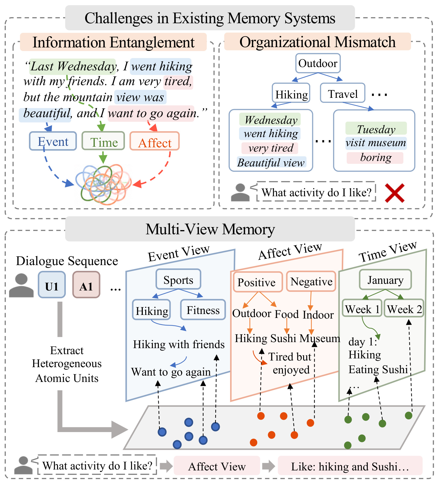
Figure 1 上部用登山对话同时展示两种缺口。左边把事件、时间和情感混在一个单元里，右边则说明即便能把户外活动组织成主题树，也不一定能直接回答“我喜欢什么”。下部的蓝、橙、绿结构表示事件、情感和时间三种入口，底部问题沿情感路径聚合登山与寿司相关偏好。读这幅图时不能把它当成三个同构副本：事件视图聚合中性事实，情感视图聚合带正负态度的单元，时间视图按发生时间覆盖所有单元。图中主题和态度存在跨越，说明相同用户历史可以支持不同检索方向，也说明分类器若把含蓄偏好判为中性，这条信息就无法通过情感树直接被发现。它为多视图机制提供了清晰动机，但没有证明这种分类本身准确；后面的表示与组织消融才是相应定量证据。图中“累但喜欢”尤其值得注意，负面体验与正面意愿可能并存，单极性分类只能近似这种复杂关系。
三种结构的叶子保存原子记忆，内部节点保存子树摘要；更高层摘要从子节点摘要生成，叶级摘要则直接使用存储的原子文本。事件树按事实语义组织，情感树按情感表示组织，时间树固定采用 Session、Day、Week、Month 的层级。此处的表示分离与检索打分要区分：前者决定信息怎样被插入和聚类，后者在查询阶段仍使用文本编码后的节点摘要做语义匹配。因此它不是让用户查询必须经过情感编码器，也不是把所有回答中的“喜欢”替换成极性标签。专用表示服务于组织，摘要则让统一的查询接口能够访问不同结构。
2.2 动态维护与自适应校准
新记忆进入事件或情感树时，系统从节点质心出发做层级束搜索，找到相似度最高的候选叶子。相似度足够高则挂到现有叶子，中等则在相同父节点下新建叶子，过低则创建新根。时间视图按时间戳确定位置，不参与同样的语义维护。输入是一个原子记忆及当前树，输出是更新后的节点和摘要计数；这是一条在线更新规则，不是通过反向传播优化的聚类损失。
符号解释：$S_n$ 是节点 $n$ 子树中的原子记忆集合，$\boldsymbol\mu_n$ 是其表示的平均；$n^\star$ 为束搜索找到的最佳叶子，$\rho^\star$ 为输入表示与该叶质心的余弦匹配分；$\theta_{\mathrm{attach}}$ 和 $\theta_{\mathrm{new}}$ 分别控制挂接、新叶和新根之间的边界，$\Gamma$ 是相应操作。它通过阈值保留新信息的独立性，但候选节点如果在上层被束搜索剪掉，即使全局存在更适合的叶子也不能保证找到。
叶子过大或内部不一致时，会话结束后触发拆分。原文用两两余弦的均值度量凝聚度，再按叶容量决定余弦 K-means 的簇数；相近且规模允许的节点则可以合并。跨分支的合并节点放到最近共同祖先之下。合并依据节点质心，因而仍然可能忽略少数与主方向不同的记忆，不能把动态维护解释成无损的知识归并。
符号解释：$m$ 为一个叶子中的原子记忆数，$\kappa(n)$ 是叶内所有不同记忆对的平均余弦相似度，$M_{\max}$ 为叶容量上限，$k$ 为拆分簇数。原文在规模超过上限或凝聚度低于阈值时拆分；该式不是预测问答质量的指标。尤其在只有一个单元时，两两平均的分母不适用，实现需要对小节点做边界处理。
为避免固定容量在历史增长后失效，论文按视图统计量重新计算叶容量、分支数和深度。原文公式八的几个量共同约束树的规模，而不是每次重新生成整棵树。
符号解释：$v$ 表示事件或情感视图，$\widetilde n_v$ 与 $n_{\max}^{(v)}$ 为观察到的各段历史原子记忆数量的中位数与最大值；$M_{\max}^{(v)}$ 为叶容量，$b_{\max}^{(v)}$ 为内节点分支上限，$H^{(v)}$ 为最大深度，$\widehat L_v$ 为所需叶数的估计。平方根规则平衡叶内规模和树宽，但它仍是经验容量规则，不能保证所有用户、语言和历史分布都最优。
维护阈值来自插入过程中收集的余弦分布：先用 Otsu 方法分出低、高相似度部分，再分别取指定分位数估计新根、挂接、凝聚与合并阈值。新估计不会直接覆盖旧阈值，而是平滑更新。
符号解释：$s$ 是校准轮数，$c$ 为阈值类型，$\widehat\theta$ 是本轮分布估计，$\theta$ 为实际使用值，$\eta$ 控制保留上一轮阈值的比例。论文取 $\eta=0.5$，会话后更新的阈值用于下一会话。摘要更新也采用延迟策略：节点及祖先的变化计数累计到 $\delta=20$ 才重新调用 LLM，总结更新次数减少，代价是内部摘要可能短暂滞后。Table 1 中 LoCoMo 事件与情感叶容量分别校准到二十九和三十三，LongMemEval 中分别为二十二和十一，说明专用结构确实形成了不同的最终参数。
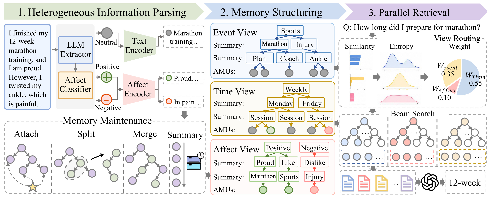
Figure 2 从左到右给出完整信号流。左侧输入一段马拉松训练与受伤经历，LLM 拆出训练事实、自豪和疼痛，再由情感分类器和两种编码器形成分路；中间把中性活动、积极与消极态度送进对应层级，同时由时间路径保存会话位置。下方挂接、拆分、合并和摘要图标强调这些树会随新会话变化，而不是一次建完保持不动。右边收到“准备马拉松多久”的查询，先比较各视图叶摘要的匹配分布，再把更多预算分给时间视图，最后从各路取回证据供回答模型使用。图示时间、事件、情感权重分别为零点五五、零点三五和零点一，仅是一个问题的例子，不能当作全局固定配额。框架显示解析和维护主要发生在记忆构建期，查询时执行路由、束搜索和生成，这个分工解释了为何要同时测构建 token 与推理 token。它也揭示了两种误差来源：抽取阶段可能漏掉训练周数，上层摘要可能把具体持续时间压缩掉；多路组织本身不能恢复未保存的细节，回退原对话才提供第二次查证机会。图中的并行检索也不代表系统整体没有串行依赖：查询必须先完成叶摘要打分和预算分配，才能知道每路要取多少个叶子；构建时摘要更新又可能依赖下层结果。原文没有给这些阶段的端到端耗时拆分，所以应把并行看成路径组织方式，而不是已经测得的固定加速比。对于同一条原子记忆从时间与另一视图同时取回的情况，最终合并需要去重，否则重复证据会挤占回答上下文并被误认为独立支持。
2.3 熵路由、层级束搜索与对话回退
查询阶段先对每个视图的全部叶摘要算相似度，再把分数转成概率分布。作者把分布越集中解释为该视图存在更明确的相关证据，因此使用归一化熵的补值分配检索预算。熵刻画的是索引分数分布的集中程度，并非回答正确概率。一个错误但高度集中的叶子也可能得到高权重，尤其当主题匹配强而证据不完整时。
符号解释：$q$ 是查询，$z_{v,j}$ 是视图 $v$ 第 $j$ 个叶子的摘要，$s_{v,j}$ 为余弦分数，$\beta$ 是温度，$\alpha_{v,j}$ 为视图内叶概率；$N_v=|\mathcal L_v|$ 是叶子数量，$\overline H_v$ 是归一化熵，$\mathcal V$ 为三个视图集合，$w_v$ 为路由权重；$K$ 是总叶检索预算，$K_v$ 是每视图初始预算。原文称这是初始化规则，四舍五入并设最少一个叶子并不自动保证三路之和严格等于 $K$；三个视图都接近均匀分布时，权重分母也需要数值保护。正文没有给出这些细节的明确补偿规则，复现时应记录而非自行视作已解决。
进入视图内部后，束搜索使用归一化语义分与 BM25 词法分混合，保留每层最好的若干路径。语义分帮助改写查询仍能找到相关事件，词法分保留品牌、书名和时间等精确词。最终合并三路原子记忆并去重。若回答模型判断证据不足而返回“无信息”，再回到对应原始对话轮次生成回答。
符号解释：$n$ 为候选节点，带波浪线的语义和词法分是归一化打分，$\lambda$ 控制词法比例；$\mathcal E_q$ 是去重后的原子证据，$\mathcal D_q$ 是回退所用原始对话，$\widehat y$ 为输出。论文取束宽十、检索叶预算二十、词法系数零点二五和温度零点一。训练与推理差别在此应表述为构建与查询差别：本文调用现有模型组织和读取外部记忆，没有给出一个端到端训练的新编码器。回退还意味着系统保留原对话，不是压缩后即可安全丢弃源数据。
3. 实验结果
3.1 主基准、指标与成本口径
LoCoMo 使用十组长期会话和一千五百四十个问题，包含单跳、时间、开放域和多跳四类；LongMemEval-S 使用五百个问题，覆盖知识更新、多会话和几类单会话任务，以及时间推理。主实验语言模型为 GPT-4o-mini，另测 Qwen3-30B-A3B-Instruct-2507；表中简称 Qwen3-30B，不能理解成所有三百亿参数模型的平均。作者报告三次运行的准确率均值与样本标准差，判断正确与否由 LLM 裁判完成。附录明确大部分基线成绩来自 TiMem，LightMem 与 MAGMA 由本论文作者按设置评估，因此“统一设置”不等于所有基线在同一代码库被重新完整跑过。
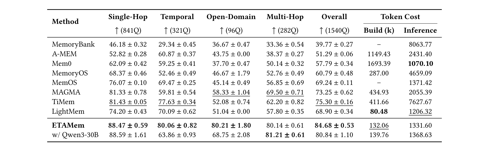
Table 2 左侧四个任务列给出问题数与准确率，Overall 汇总全部问题，右侧 Build 以每会话千 token 表示构建成本，Inference 为每题输入 token。ETAMem 总准确率为百分之八十四点六八，TiMem 为百分之七十五点三；差值是九点三八个百分点，除以 TiMem 分母才得到摘要所写约百分之十二点四六的相对提高。不能把后者写成提高十二点四六个百分点。开放域与多跳表现分别为八十点二一和八十点一四，但各类基线最佳值不同，不能把所有局部增益都以 TiMem 为最强对照。构建成本一百三十二点零六千 token，低于 TiMem 的四百一十一点六六千，却高于 LightMem 的八十点四八千；推理输入一千三百三十一点六，也高于 Mem0 的一千零七十点一。因而该表支持质量与成本之间的折中，不能支持全维度最低成本。换 Qwen 后总体降到八十点八四，时间题从八十点零六降到六十三点八六，说明组织结构相同也无法消除回答模型对时间推理的影响。四类问题的样本量分别为八百四十一、三百二十一、九十六和二百八十二，总准确率不是四列简单平均，单跳题占比尤其大；因此开放域的明显提高不能直接等价成同样幅度的总体增益。误差条是三次运行的样本标准差，主方法总体零点五三，并不是每个问题正确率的置信区间。表中也没有对基线和主方法的逐题差异做配对统计检验，不能把所有局部差异都称作显著。若自己的应用更关注跨会话组合或时间更新，应根据题型重新加权，并同时观察回退比例，避免只被总体分数引导。
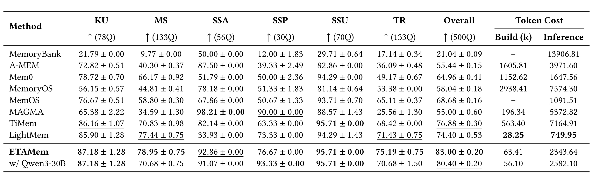
Table 3 把知识更新、多会话、单会话助手、偏好、用户信息与时间推理分开列出，六列题数相加为五百。主方案总准确率百分之八十三，对 TiMem 的七十六点八八提高六点一二个百分点，相对提高约百分之七点九六。跨会话与时间推理分别为七十八点九五和七十五点一九，对 TiMem 的提高为八点一二和六点七七个百分点。表中并非每列都由 ETAMem 领先：MAGMA 的助手类为九十八点二一、偏好类为九十，而主方案分别为九十二点八六、七十六点六七；用户信息类也存在并列。成本同样有边界：构建六十三点四一千 token，确实低于 TiMem 的五百六十三点四，但高于 LightMem 的二十八点二五；推理输入二千三百四十三点六四，显著高于 LightMem 的七百四十九点九五。主方法的准确率优势不能被改写为每题上下文最省。Qwen 版本总分八十点四，偏好列却升到九十三点三三，提醒读者总体更低和局部更高可以同时成立。
两个主表中的成本只统计规定模型调用的 token，构建是每会话总调用 token 的平均，推理是每题输入 token 的平均；它们没有把编码器计算、聚类和检索索引访问直接换算成同一种费用。尤其附录的复杂度分析指出，路由需要访问全部叶摘要；叶内凝聚度检查有平方项，最坏节点合并也有节点数平方项。减少 LLM 摘要调用并不代表这些维护操作都呈线性增长。真实部署还需要量测历史增长后的内存、维护峰值与回答尾延迟。
3.2 解析、组织、表示与预算分别贡献了什么
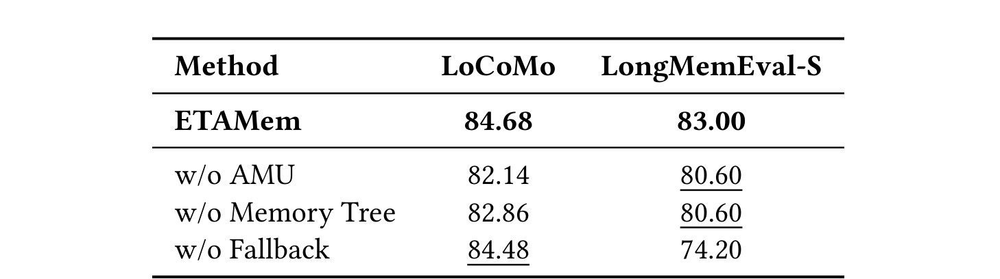
Table 4 删除三个组件后分别测两个主基准。去掉原子记忆后，LoCoMo 从八十四点六八降到八十二点一四，LongMemEval 从八十三降到八十点六；去掉记忆树后，分别变成八十二点八六和八十点六。最有区别的是回退：LoCoMo 只下降零点二个百分点，LongMemEval 却下降八点八个百分点到七十四点二。作者将这种差别解释为后者长对话中的细节更容易在抽取时被压缩，查回原始轮次可恢复证据。这是一个有力的系统边界：完整结果包含外部源对话查证，不能仅凭三视图记忆树声称已经达到八十三的分数。表格并未报告各个组件同时删除的组合，也没有给出回退触发比例和每次回退额外输入长度，所以它证明回退对该基准有重要贡献，却不能精确拆成每个问题的质量收益与耗时。部署时应保留调用日志，分别看首次回答、回退回答和最终回答，而不是只展示一个最终正确率。
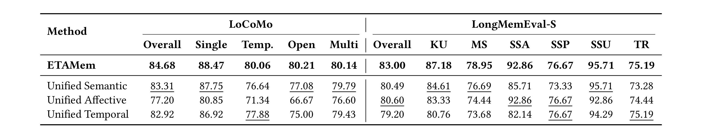
Table 5 固定问题类型后，把所有信息统一放进语义、情感或时间层级，与专用三视图比较。LoCoMo 中统一语义分数八十三点三一，是三个统一结构里最高的，与完整方法只差一点三七个百分点；统一情感下降到七十七点二。LongMemEval 上则统一情感的八十点六稍高于统一语义八十点四九和统一时间七十九点二，仍低于完整方案八十三。结果说明不同语料的最佳单一组织原则会变化，专用组织的总体收益并非某一条树在所有任务都更强。偏好列统一情感与完整方案同为七十六点六七，时间推理列统一时间也与完整方案同为七十五点一九，这支持各自擅长局部问题的解释。但主表没有给这些消融的重复方差，像一点三七个百分点这样的差距不能单凭均值断言统计显著。读者应把它作为组织方式的受控证据，并结合表示和路由消融判断完整收益，不能将表中局部持平解释成可以随意删掉其余视图。
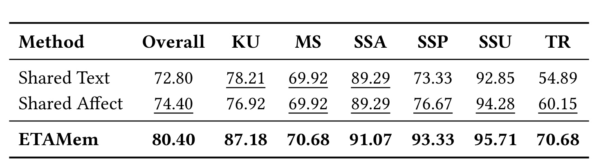
Table 6 改在 Qwen3-30B 的 LongMemEval 设置下测编码表示，不能与上一表的 GPT 主方案八十三直接做差。Shared Text 和 Shared Affect 保留事件与情感视图，但两路分别共享文本或情感表示，时间视图不变；完整方案为八十点四，共享文本七十二点八，共享情感七十四点四，分别下降七点六和六个百分点。时间推理列完整方法七十点六八，共享文本五十四点八九、共享情感六十点一五，说明组织时的表示变化还能通过证据覆盖影响看似属于时间的问题。偏好列完整方法九十三点三三，两个共享版本分别七十三点三三和七十六点六七，专用表示的差异相当明显。这个实验支持“分出类型之后，表示也要匹配”的主张，但没有把编码器规模、训练语料和向量维度做完全等价控制；因此不能把所有收益归因于信息类型这个抽象概念本身。它回答的是本文现有编码器组合是否更有效，而不是证明任意情感嵌入都一定优于通用文本嵌入。
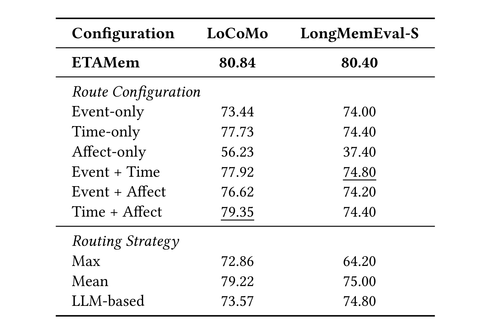
Table 7 同样使用 Qwen 版本，上半部比较检索哪些视图，下半部比较怎样分配预算。只用情感视图的分数为五十六点二三和三十七点四，远低于只用时间视图的七十七点七三和七十四点四；这与时间视图包含全部原子记忆、其他视图仅保存相应类型有关，不能直接归纳为情感信息没有用。LoCoMo 上时间加情感达到七十九点三五，已接近完整三路八十点八四；LongMemEval 上两个视图的最佳组合事件加时间为七十四点八，三路完整为八十点四。下半部等额 Mean 路由为七十九点二二和七十五，熵路由分别高一点六二和五点四个百分点；只选最大权重视图的 Max 下降到七十二点八六、六十四点二，说明不能把高置信度解释成丢弃其余证据。LLM 直接选视图也未超过熵路由，但该实验只测作者选定的提示与模型。实际复现还应核对各路取整后的真实叶数，确保动态预算效果没有混入总检索量变化。
这些消融共同支持一个更窄而扎实的结论：在作者的记忆抽取和回答设置下，原子化、专用组织、专用表示、互补视图与预算分配都能影响最终准确率；它们不是一个可以随意互换的“多路召回”标签。不同实验的语言模型、覆盖范围和分母不完全相同，不能把所有表里的降幅简单相加，宣称这是某个组件的总贡献。尤其回退是查询后补充证据，表示是构建时改变记忆几何，二者干预的位置不同。
3.3 情感相关问题与超参数敏感性
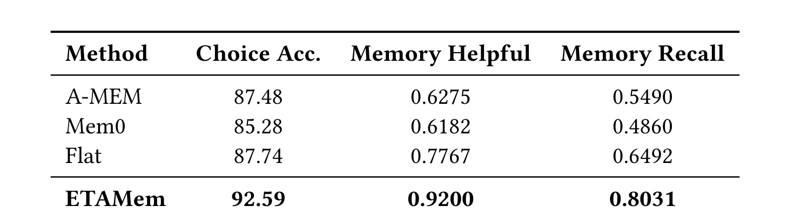
Table 8 将评测扩展到来自日记、社交媒体和邮件等个人数字痕迹的 CloneMem，覆盖经历、情感与观点。这与前面两套对话基准不同，检索预算也按原基准采用五，文本嵌入为 text-embedding-3-small，回答骨干仍为 GPT-4o-mini。准确率以百分制表示，证据帮助度与记忆召回则为零到一，三个列不能直接横向比较数值大小。ETAMem 的选择准确率为九十二点五九，对 Flat 的八十七点七四高四点八五个百分点；帮助度零点九二、召回零点八零三一，对 Flat 的零点七七六七和零点六四九二分别形成约百分之十八点四五和百分之二十三点七一的相对提升。它说明方法不只在对话来源上出现优势，但基线成绩沿用原基准，且任务是个人记忆选择题，不是推荐点击或用户满意度实验。不能将高选择准确率等同于真实长期偏好建模已足够可靠，特别是数字痕迹中隐含态度和反讽表达可能超出正负极性分类器的训练分布。
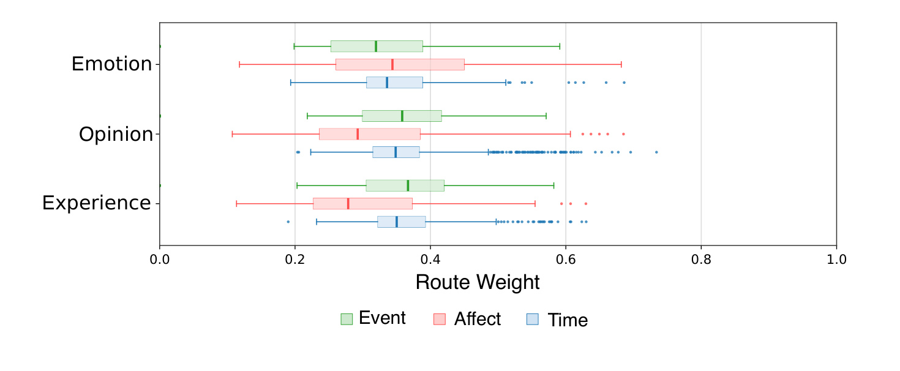
Figure 3 的横轴是路由权重，纵轴区分情感、观点和经历三类问题，颜色分别表示事件、情感与时间视图，箱线和离群点展示权重分布。情感问题中情感视图的中位权重略高，经历问题更偏事件，观点问题仍需要事件与时间信息；图形支持的是查询相关的分配变化，而不是每类问题被硬编码到一条固定路径。三个分布存在大量重叠，因此看到某条情感树权重较高，不能据此给问题贴上确定的情感标签。长尾点还说明一部分查询会强烈偏向时间路径，若固定只取单一路径，可能损失其余互补事实。这里没有把权重与每题正确率做因果对照，不能声称图中权重越合理就必然回答越好；它是路由机制行为分析，质量证据仍要依赖前表的对照。部署中可以利用这种分布观察异常，例如用户历史很稀疏时某一路熵异常低，但需要单独校准才能用来触发可靠性判定。
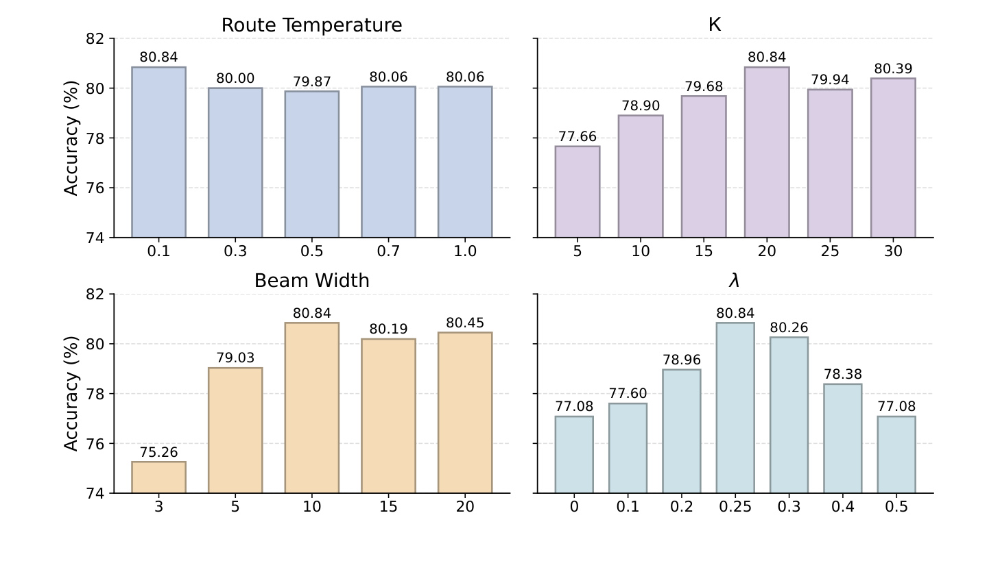
Figure 4 在 LoCoMo 的 Qwen 设置中分别改变四个参数，纵轴为准确率。温度零点一取得八十点八四，增大到零点三至一点零后大致在八十附近，表明更集中的路由有益，但这段曲线的差距不大；检索预算从五增至二十时分数由七十七点六六到八十点八四，再继续增加没有单调收益。束宽从三增到十改善明显，到十五和二十没有继续超过十，说明更充分探索可以减少路径剪枝损失，但过宽也可能带入噪声。词法比例从零到零点二五时，由七十七点零八提升至八十点八四，再增大则下降，体现精确词匹配与语义检索的折中。四个面板是各自扫参，不是联合搜索结果，不能据此证明这些值适用于其他数据或语言；而且图中没有延迟轴，预算和束宽更大究竟多花多少计算并未同时展示。对工程使用者，更合理的后续是把准确率、实际取回 token 和延迟放在同一条曲线上重新选点。
附录用四百条原子记忆做情感信息的人类二分类标注，两名标注者的 Cohen 一致性系数为零点六五一，分歧讨论后形成标签。主情感分类器 RoBERTa-Sentiment 的精确率八十点七九、召回八十点二六、F1 八十点五三；GPT-4o-mini 对照分别为七十三点六、八十六点一八和七十九点三九。主分类器的 F1 略高、召回略低，支持采用轻量模型的可行性，但也说明约五分之一相关判断仍存在误差。作者在结论中承认，仅靠极性可能漏掉中性表达的偏好，这与“喜欢但说得不带明显情绪”的实际场景有关，不能因主问答分数较高而忽略。
3.4 真实查询的证据链与错误来源
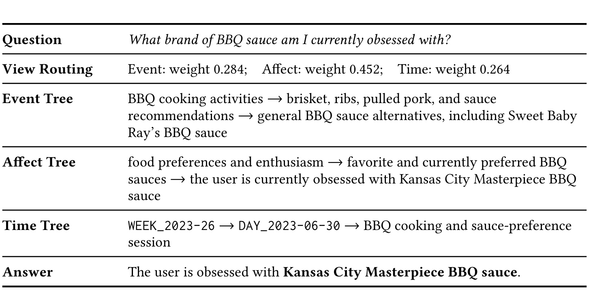
Table 9 提问用户目前迷上哪个烧烤酱品牌。事件树召回烧烤活动与酱料推荐，包括另一个可能品牌；情感树指向当前热衷的 Kansas City Masterpiece，时间树定位到六月三十日的相关会话。路由给情感零点四五二、事件零点二八四、时间零点二六四，最终回答使用当前偏好。这个案例展示三路证据怎样分工：事件让系统知道讨论对象，情感区分“提过”与“喜欢”，时间让它关联最近更新。若只看语义相似，多个酱料品牌都可能是相关答案；若只看时间，某条近期会话未必明确表达喜好。因此它比单纯展示正确答案更能解释多视图的用途。不过这仍是作者挑选的一个成功例子，没有随机抽样和失败比例，不能证明所有冲突偏好都能处理。它也没有展示同一天相互矛盾、撤回偏好或重复转述的情况。迁移到用户画像时应保存来源轮次和有效时间，让后续可以追溯为什么认为某个偏好仍然有效，而不是只存最终品牌字符串。
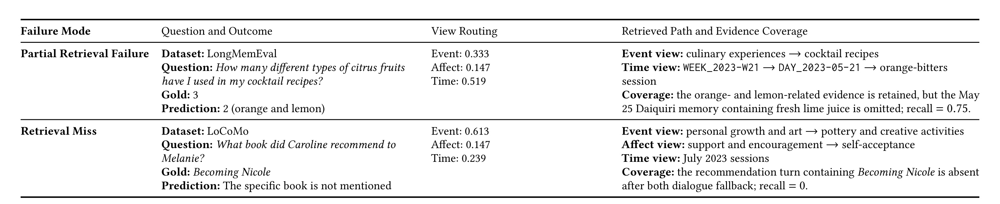
Table 10 的第一例问用户在鸡尾酒配方中用过几种柑橘，正确为三，系统只找到橙和柠檬，遗漏五月二十五日涉及青柠的对话，答案变成二。时间视图权重已达到零点五一九，仍然无法保证完整覆盖；这说明路由把预算分到正确方向与束搜索真正找到全部证据是两件事。第二例问推荐过什么书，系统找到个人成长、陶艺与自我接受等相关主题，却没有找到包含书名的那一轮，回退也未补回，因此返回未提及具体书籍。两种失败分别对应“多数证据正确但缺少计数所需一项”与“主题相关但目标事实完全缺失”。表中第一例的证据召回值为零点七五，不能因三种水果少一种就擅自改成三分之二，它采用的是作者的记忆覆盖定义，未提供可由水果数量直接还原的统一分母。对这类问题，系统应当保留检索覆盖的不确定性，尤其计数和集合汇总不能用几个相关片段就断言已经穷尽全部历史。
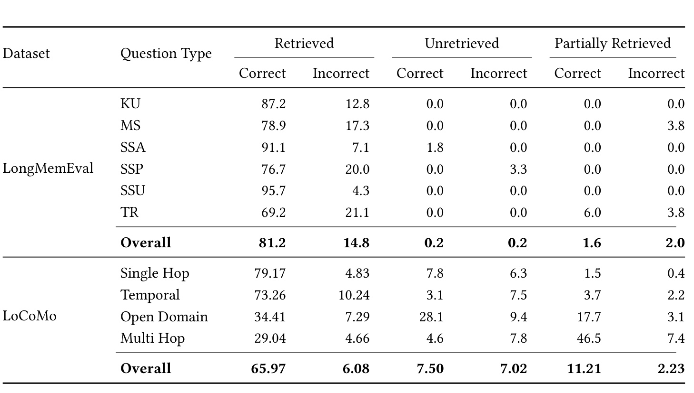
Table 14 将检索完整、未检索到和部分检索到三种证据状态，各自再分为回答正确与错误。LongMemEval 总行的完整检索且错误占所有问题百分之十四点八，而完整检索且正确为八十一点二；前者分母是全部问题，不能说成“检索成功的答案有十四点八错误”，后者需另行除以完整检索问题总量。LoCoMo 总行里未检索且错误为七点零二、部分检索且错误为二点二三，合起来九点二五，占全部错误约百分之六十点三，与正文四舍五入的六十点四接近。两套数据的瓶颈因而不同：前者存在取到证据仍不会正确整合的情况，后者很多错误与证据缺失相关。多跳类部分检索仍答对的比例很高，提醒我们正确答案也不必然意味着证据完整，模型可能依靠已有知识或不充分线索生成正确结果。该表是事后诊断，未给逐样本核验材料及重复方差，但它足以约束泛化结论：三视图不能同时解决召回覆盖、事实更新和证据推理的所有问题。
4. 总结
ETAMem 的主要价值是把外部记忆的内容类型、表示方式和索引结构接起来。它没有把所有历史混成一个向量，也没有把树结构当成独立于记忆语义的容器，而是让中性事件、带态度的信息和时间入口形成互补。主实验显示这种组织在两套长期记忆问答上有效，专用表示与动态路由的消融提供了进一步支持。更值得保留的工程判断是：分清用户做过什么、说过喜欢什么、在什么时候说，是长期个性化系统的基础数据模型，不能只靠最终回答提示补足。
将它迁移到推荐用户建模时，可以先从显式偏好的可追溯索引做起，把偏好原句、人物、事件时间和源会话关联起来，再将检索结果作为排序或解释的补充证据。这里还需要设计有效期、冲突消解和撤销机制，避免一次历史表达永久主导画像。对 RAG 或服务 Agent，可借鉴的是在检索前比较不同组织路径的证据形态，以及在摘要信息不足时保留回查来源的能力。本文没有在线推荐、真实用户满意度或长周期服务实验，这些迁移属于待验证设计判断。
需要保留至少四类限制。第一，极性分类把中性表达与无情感混在一起，可能遗漏没有明显情绪词的真实偏好；轻量分类器的精确率和召回也不完美。第二，AMU 抽取及内部摘要是有损操作，LongMemEval 回退的八点八个百分点贡献说明原始对话仍然重要，不能只保留压缩结果。第三，熵路由把集中度当作相关证据清晰度，高集中错误与近均匀分布的数值处理尚需单独检验，取整预算也要核查。第四，主表成本衡量 token，不覆盖编码器、全叶路由、聚类与最坏合并开销，不能据此许诺长历史下低延迟。第五，基线多为沿用成绩，裁判以 LLM 为主，跨语言、长期漂移、隐私删除与权限控制缺少直接证据。
后续复现优先做三件具体工作。先在相同回答模型与相同真实检索 token 下，对比三视图、统一语义与等额多路，记录每题初次回答和回退回答，分清组织收益与额外上下文收益。再建立包含中性偏好、否定、反讽及观点变化的小型人工测试，分别评价分类、证据覆盖和最终答案，避免只用一个总体准确率遮住上游错误。最后随会话数增长量测构建与查询耗时、存储占用和叶数变化，并检查删除一条源对话后相关原子项及摘要能否彻底移除。只有这些条件补齐，才能判断本文的动态树与熵路由是否适合自己的生产数据，而不是照搬默认参数。
还有一项值得直接借用的实践是把错误按证据状态保存。完整证据下答错，应优先检查回答提示、时间换算与冲突处理；缺少证据时答错，应检查抽取、摘要和路径剪枝；证据不全却答对，也要标为潜在不可追溯结果。这样的分解能让模型替换和索引调整各自承担清晰责任，避免每次总体分数变化都去重写全部流程。它来自附录错误分析的启发，仍需要在自己的数据上用人工证据标注验证。
本笔记未运行作者训练或复现实验，数值均来自原文表图与附录；所有相对变化、百分点和成本分母按对应表格区分。现有证据支持继续研究异质记忆组织，也明确保留了检索不完整、证据推理失败和维护成本的现实边界。